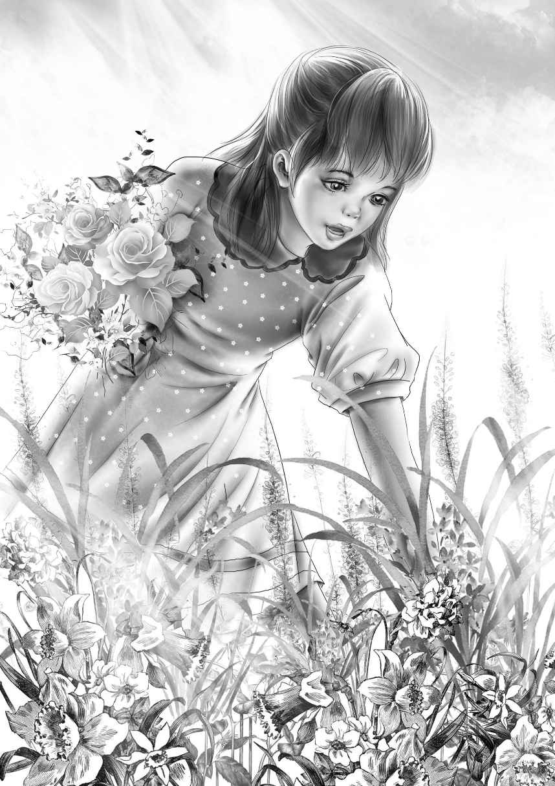

Soon everyone in town knew the four young Aldens. They went everywhere.
One morning Benny went over to the Bean farm. He met Mr. Bean,Andy's brother,and Mrs. Bean. They were glad to see Benny and told him to come often. But they never said a word about Andy,the older brother who had run away.
At lunch Benny said,"Here's something funny. You know the Beans raise eggs."
"They raise hens,Benny," said Jessie smiling.
"Well,anyway,they sell eggs. And every day about three eggs are gone."
"How do you know,old fellow? How do the Beans know?" asked Henry.
"Well,Mrs. Bean told me," said Benny.
Violet laughed and said,"Henny Penny told me."
"No,really," said Benny."No fooling. You ought to see the list of eggs. They have a paper in the kitchen. It's on the wall. Every time they put down how many eggs they get." Everyone waited,smiling at Benny.
Benny went on."Well,this is how the numbers go:35 the first day,then 36,34,35,35. You see—always about 35 eggs?Then one day suddenly it's like this: 32,31,33,31,30. See? Somebody's stealing eggs."
"Imagine that!" said Aunt Jane."This is a very honest town."
"A mystery!" said Henry."The Case of the Stolen Eggs!"
Jessie laughed at Henry's joke,but Benny was serious.
"We've been everywhere in this town except the woods," said Benny."Let's go up to the woods today."
"Well,you can go if you wish," said Aunt Jane."But these woods are not as interesting as the ranch. In the fall you can find nuts. But there is nothing there now except the brook and the old woodshed."
The boys looked interested just the same.
"Woodshed?" asked Henry."Why did they put a woodshed so far away from the house?"
"A good question,Henry,"said Aunt Jane,much pleased."They used to cut down the enormous trees. Then they cut them up right where they fell. They used to fill that woodshed with new wood. Sometimes they left it for a year to season. The woodshed kept the snow off."
"It burns better when it's old," said Benny.
"Oh,much better.Green wood will hardly burn at all."
The day was hot. The children walked slowly up the hill to the woods.
Violet stopped to pick a few flowers. She said,"Aunt Jane loves flowers."
The Aldens knew the names of many wild flowers. Violet picked a few pink lady's-slippers,a jack-in-the-pulpit,and some white foamflowers.
"I see the old woodshed," said Benny."It isn't much."
"No," said Jessie."It's just a woodshed. Aunt Jane told you that."

At last they stood in front of the woodshed. They looked at it.
"No windows," said Benny."If it had windows it would be a fine playhouse."
Henry pushed the door open. He looked in. It was dark inside. He looked again.
"This is strange," he said."You look,Jessie."
Jessie put her head in the door.
"Somebody lives here!" she cried.
"Let me see!" shouted Benny. Then they all went inside.
"I don't see a thing," said Violet.
"Wait a minute,Violet," said Henry. "Your eyes will get used to the dark."
"A table!" cried Benny. "And a bench under it!"
It was true. A small table stood in the corner with a bench under it. On the table were two old plates,a cup,and a fork and spoon.
"No knife," said Benny."I bet somebody has a knife right in his pocket."
"There is no food,either," said Jessie.
"Yes,there is,Jessie! Look up!" Violet was excited.
Sure enough,there was a shelf over the table. On it was a wide shingle and four cans of food. There were beef and ham and canned string beans and peas.
"What do you know!" said Henry."We must tell Sam about this. I don't think we'd better tell Aunt Jane."
"Do you think it would scare her?" Benny asked.
"I'm afraid so," said Henry. "What do you think, Jessie?"
"I don't know. Let's tell Sam first anyway."
While they talked,Violet looked carefully around the one room.
"There must be a bed," said Violet. "I don't see one."
But Watch did. He had found the bed easily and was lying on it.
"Sometimes I think that Watch can see in the dark,"said Violet. "It's just a blanket on some hay. I wonder where the hay came from?"
"Maybe from some barn," said Henry. "Plenty of hay around here."
Then they saw the egg. It was behind the cans.
"An egg!" shouted Benny."I told you somebody was stealing eggs. This is where the eggs go! Three every day! A mystery!"
"Two mysteries," said Henry."Who takes the eggs and who lives here?" Then he turned around suddenly."Let's go," he said.
They all knew why Henry wanted to go. He thought the man who lived in the woodshed might come along. And he did not want Violet to feel frightened.
Violet left in such a hurry that she forgot her wild flowers on the little table.
When they reached home,they found Sam very busy indeed with his new chickens.
They lost no time in telling Sam about the woodshed and what they had found inside it. They tried to get Sam to help them guess who might be making the woodshed a home. It seemed like such an odd thing for anyone to do.
Sam looked at the Aldens and shook his head.They were always getting mixed up in something.
"I can't come now," he said."That woodshed won't run away."
"Don't you believe us?" asked Benny."We all saw it."
"Sure I believe you," Sam said. But he laughed. "It could be a playhouse," he said.
"Whose playhouse?" asked Benny.
"Well,any of the neighbors,"said Sam."There must be lots of children in the town."
They decided not to tell Aunt Jane. They could tell her later. They had to wait because Sam would not go until after lunch.
"Where are you all going?" Aunt Jane asked.
"We want Sam to see that woodshed!" Benny said. "It looks like Abraham Lincoln's log cabin."
Aunt Jane said nothing. But she knew something was going on. Maggie knew,too.
"It beats all,Miss Jane," said Maggie."Those four always find such interesting things."
"So they do,Maggie.They'll tell us when they get ready."
Sam walked slowly up the hill. Benny danced on ahead with Watch.
"You'll soon see for yourself,Sam," he said.
They reached the woodshed.Benny pushed the door wide open. "Go right in,Sam,and look around."
Sam went in and stood still.
"I don't see a thing," he said.
"Wait,"called Violet."Your eyes have to get used to the dark."
But still Sam could not see anything. The four went inside and looked around.
"What! What!" cried Benny.
The woodshed was empty. There was no bed,no table,no bench,no food. Nothing at all.
"No egg," said Benny softly.
Henry looked at Sam. "But they really were here,Sam. We all saw them. You'll have to believe me."
"I do believe you," said Sam."Now what next? What'll you do?"
Violet said,"We'll certainly have to tell Aunt Jane now."
"Yes," Henry agreed. "That's what we will do."